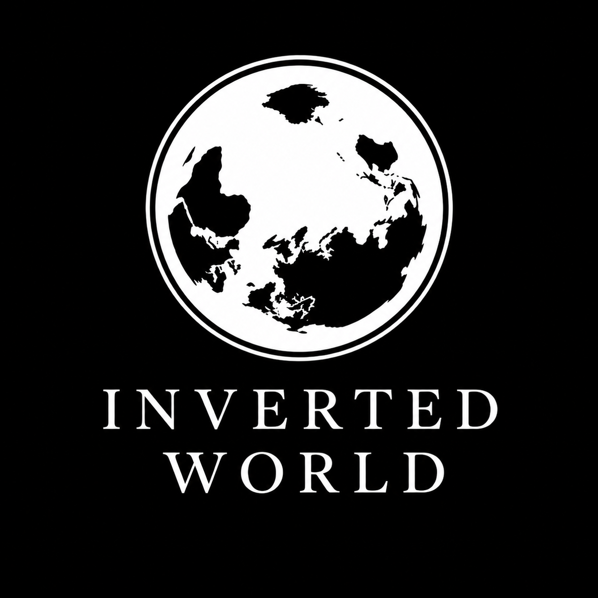

The Inverted World presents
THE
ANTIZIONIST
GLOSSARY
A Contemporary Guide
“In this useful and timely glossary of modern anti-Zionist vocabulary, Mr. Jones has created something we all need.”
Natan Sharansky
Soviet dissident, Israeli politician, and author